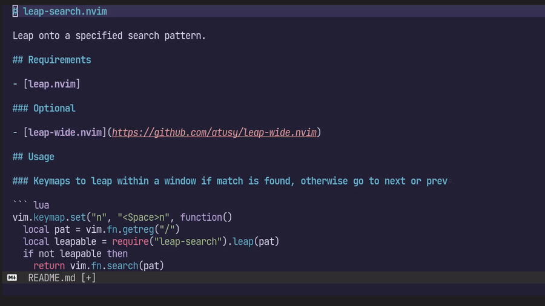

leap-search.nvimについて
というわけで指定したパターンを元に、Window内の文字列を検索してラベルをつけ、ジャンプするleap-search.nvimを作ってみました。
正規表現による検索結果へのジャンプ
たとえば以下のように leap.{-}nvim などと、Vimの正規表現を利用できます。
require("leap-search").leap("leap.{-}nvim")応用すると直前の検索パターンでハイライトされた箇所にジャンプなんてこともできますね。
/leap.{-}nvim
:lua require("leap-search").leap(vim.fn.getreg("/"))
とても便利なので、私は以下のようにマッピングしています。
vim.keymap.set("n", "gn", function() require("leap-search").leap(vim.fn.getreg("/")) end)
vim.keymap.set("n", "gN", function() require("leap-search").leap(vim.fn.getreg("/"), {}, { backward = true }) end)ドキュメントがまだ皆無ですが、第二引数がleap-search.nvim独自のオプションのテーブル、第三引数がleap.nvim本体のオプションのテーブルになってます。
様々な検索エンジンの利用
第二引数を弄ると、以下の検索エンジンの組み合わせも可能です。
- Vimの正規表現を用いる
vim.regex - Lua expressionまたは部分一致を用いる
string.find - migemoで日本語をローマジ検索する
kensaku.query- エンジンが依存するkensaku.vimが必要
- 全角文字へのラベルに関するバグを補正するleap-wide.nvimを推奨
たとえば string.find で部分一致を、 kensaku.query でローマ時検索を実行するなら以下。
-- 「kensaku」というパターンで「kensaku」にも「検索」にもラベルをつけられる
require("leap-search").leap("kensaku", {
engines = {
{ name = "string.find", plain = true },
{ name = "kensaku.query" },
},
})対話的な検索
更に、第一引数に検索パターンにnilを与えると対話的な検索モードに入ります。あいまい検索機能こそありませんが、fuzzy-motion.vimに近い挙動です。
require("leap-search").leap(
nil,
{
engines = {
{ name = "string.find", plain = true },
{ name = "kensaku.query" },
}
},
{
-- 現在のWindow全体を検索対象にする
target_windows = { vim.api.nvim_get_current_win() },
},
)
ENJOY!!